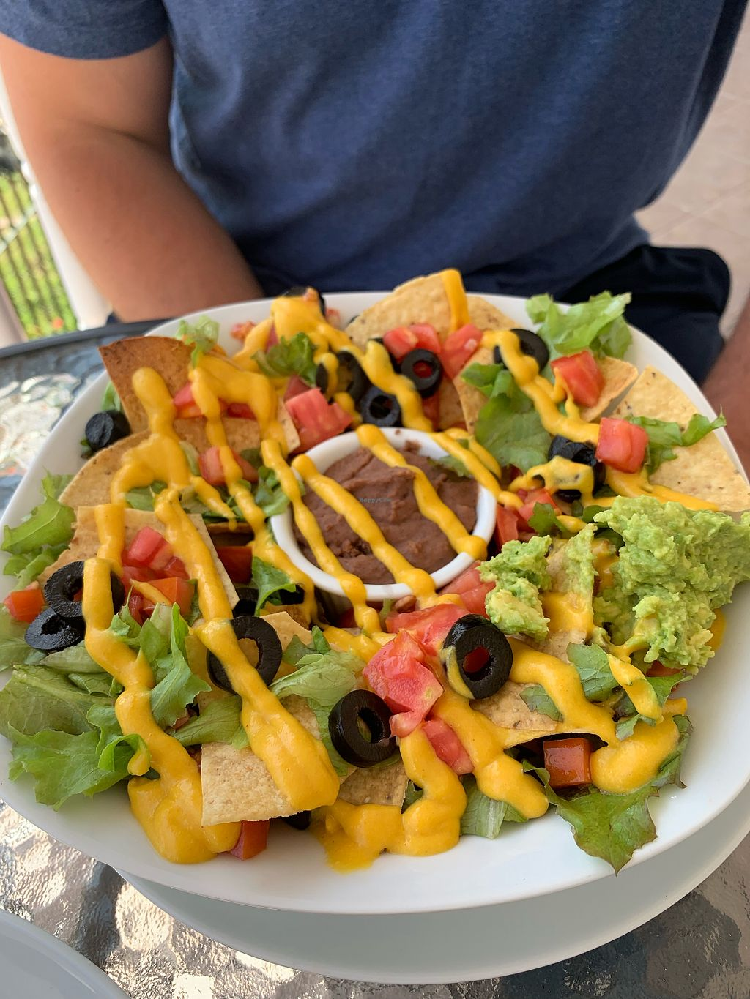
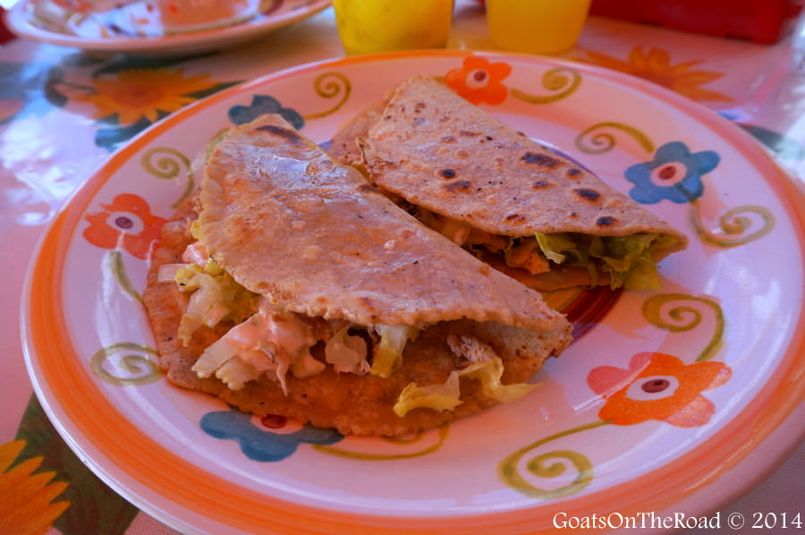

-
The Best Nachos
Hands down the best nachos in Belize are at Los Nachos. Trust us.
Directions: To get there, you must order a taxi at the Center Station. Ask them to go to Alex Reservoir and take the second left.
-
Tacos, baby!!
Doesn't matter if you're vegetarian or not, the veggie tacos at Lawrence's Eatery MUST be tried.
Directions: If you're comfortable with taking the bus, head over to Sal Anger Depot and get on the blue bus heading toward Santa Palo. It's the second to last stop. If you're not ready to start your bus journey, take a (semi-expensive) taxi to 5th and Los Felix Parkway.